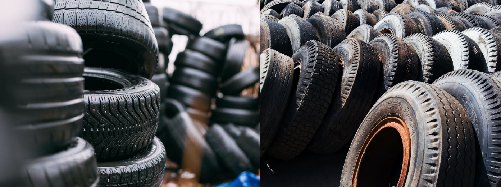

Rv Tire Safety | All You Need To Know
Tires are some of the most important parts of any vehicle and an rv is no different. Rvs don't have the best reputation when it comes to tires, and if you've ever had a blow out on the road, you know what I'm talking about. But with proper care and maintenance, your rv's tires can last an extremely long time without any problems.
In this article we'll be looking at these 8 things:- Why you should always inspect your rv tires.
- Which tires are the best for your rv.
- The different types of tires.
- How to replace an rv tire.
- Best ways to avoid blowouts
- A table which shows what letters mean on tires.
- How to store tires properly.
- Maintaining correct inflation pressure when tires are cold
Why you should always inspect your rv's tires?
Inspecting your rv's tires should be the first thing you do before driving your rv and the thing you do after you park. Anything can happen while your driving your rv. Your tires could pick up nails or pot holes could damage the sidewalls.
How often should you do it?
Every time you start your rv, before you drive off. And when ever you park down for more than 3 days, and then check them at least once a month. If one is picking up any sign of damage or wear on the tire's sidewall, have it replaced immediately.
The best thing to be is safe rather than sorry. You never want to leave things as important as tires to chance. It's not always the driver's fault or how long a tire has been in use that leads to a blowout, sometimes it's the age of the tire.
The key thing here is to avoid letting your rv tires get old and brittle. If you tow an rv for long distances each year, with heavy loads, you will need to make sure that is not too much wear on the tires. If tire wear is visible, change them.
Which tires are best for your rv?
Rv tires are much different than the ones on your personal vehicle. This is because different types of tires are designed for different kinds of uses. The kind of rv you have will determine your tire choice and this can be a difficult choice to make. Luckily there is always good advice available if you seek it out.
Tires aren't just for looking nice, they are also very important for keeping the vehicle balanced even on poorly constructed roads. Choosing the right tire for your rv is your responsibility.
Here are some things you need to ask when buying rv tires:- Is this tire meant for use on rvs?
- The rv tire industry is not as well protected as the regular car tires. This means that you need to always be careful when choosing your tires and pay special attention to the manufacturer's labeling. If they are certified, then there is a great chance that they will serve you for long enough in an excellent manner confirming their high quality.
- While you are buying your rv tires, make sure that they are meant to support the weight of your vehicle. Always be keen when getting these rv tires because they could not necessarily have the same load capacity as a regular car tire. Here is what you need to do: inspect the DOT code on the sidewall of the tire. This will give you the information you need.
- Is this a radial or bias tire?
- What type of traction does this tire offer?
What is a radial tire?
A radial tire is one that features a steel belt that wraps around the tire. This was designed to replace bias-ply tires, which featured rubber in between layers of cords. The radial style is more durable and lasts far longer than its predecessor.
In most cases, rv tires are radial because they provide better performance while driving on the road or off-road. They offer greater fuel economy compared to bias tires.
What is a bias tire?
Bias tires are also known as bias-belted tires. These have layers of cords with rubber between them for added strength and protection against deterioration. The design is not very good, so they are slowly being phased out in favor of the radial style tire. These types of tires have a shorter lifespan than radial.
How to change an rv's tire?
Changing an rv tire is not that much difficult than changing the tire on any other type of vehicle.
Items needed for the job:- 2 Jacks
- New tire or tires
- Heavy Duty Lug Wrench
- Rv Leveler
- Use your leveler and jacks to raise your rv just high enough for the wheels to spin freely. You can run a flat object underneath the tire to see if there is enough clearance from the ground.
- The next step is to take the heavy duty lug wrench you have and remove all the lug nuts.
- Check all lug nuts for any signs of wear and replace ones that need to be replaced.
- Take your time removing the wheel and set it to the side.
- Place the new tire onto the the wheel studs.
- Tighten down the wheel onto the wheel stud using the lug nuts you removed earlier.
- Lower the rv to the ground and remove jack stand and levelers.
How to inflate a tire?
To inflate an rv's tire you need to use either an air compressor and a pressure gauge or nitrogen system inflation.
Whenever you finish checking rv tire pressure, make sure that the valve cap is tightly secured to prevent air leaks. Check your wheels for any damage or cracks before you inflate them. If there are any damages, take it in to get repaired at once because they can cause leakage which will hurt your tires.
This is how a tire or wheel looks after you remove the valve cap:
Using Air Compressor to Inflate
This is the most popular way of inflation most vehicle tires. You first have to remove the valve cover, see an image for guidance.
To inflate your rv's tire using an air compressor you need to first choose what type of pressure gauge you should use. The dial and digital gauges are similar with only one difference which is the convenience and ease of reading the digital type. The dial type gauge is read by rotating the dial clockwise for higher pressure and counterclockwise for lower pressure. On the other hand, the digital type is easier to read because you can just look at the LCD screen display instead of turning the gauge knob which will be hard if your tire has low or high pressure.
Using Nitrogen System to Inflate
Using nitrogen to inflate your tires is more sensible and practical than using air, but is it really beneficial to your tires? Actually, nitrogen has its own advantage which is less oxygen content. This means that the risk of corrosion caused by moisture is reduced. Nitrogen is also known to be less likely to form bubbles inside your tires than air because nitrogen is not affected by temperature or humidity. The cost of using nitrogen over air is more costly because nitrogen will always cost more than air.
One main disadvantage of using nitrogen is that it can be difficult to find a gas station that sells nitrogen because most stores are equipped with air-inflating filling stations. So if you have rv tires, you will want to make sure that the supply for the nearest gas station is available before traveling long distances.
Subscribe
Stay updated with our newsletter
Best ways to avoid blowouts
There are some tips you can follow to avoid blowouts. Before you start driving, always check your tire pressure. Check them yourself regularly. If there's something wrong with one of your tires, this will give you enough time to have the problem fixed before it gets worse.
Then, check for tread depth and wear bars on each tire every 300 miles you drive. Cars con go much further without having to constantly check tires. However, rvs have more weight to carry around. Rvs are made to be more durable, but don't abuse them.
Remember that though it is possible for tires to blow out without any warning signs, there are some things you can watch out for like:
- A shake or shudder when you drive
- Braking takes longer than usual to come to a stop.
- It makes odd noises when you drive.
- You can also check the tire pressure every time you fill it up with gas or water. Be sure to check your tires while they're cold – not straight after driving, or coming from a hot environment like outside in summertime. Tires lose air naturally that way.
What do the letters on tires mean?
Here is a table that shows what the letters on tires mean.
| Letter | Letter Meaning |
|---|---|
| B | Means Belted bias |
| D | This means diagonal bias construction |
| DOT | is the US Department of Transportation identification number, and it's a mark of quality assurance. |
| H | The max speed for these tires is 130 MPH |
| P | P can mean "passenger tire" if you have a passenger tire. But here it means P Metric. |
| Q | The max speed for these tires is 100 MPH |
| R | Refers to radial construction |
| S | The max speed for these tires is 112 MPH |
| T | The max speed for these tires is 118 MPH |
| U | The max speed for these tires is 124 MPH |
| V | The max speed for these tires is 149 MPH |
| W | The max speed for these tires is 168 MPH |
| Y | The max speed for these tires is 186 MPH |
| Z | The max speed for these tires is 187 MPH |
How to store tires properly
Storing tires is a big deal. But how do you do it properly? How do you store tires to last? Let me tell you, it is very important that you store the rv tires properly for safety reasons. Storing an unbalanced tire (at least it should be if you care about safety) in a garage or anywhere else can lead to damage of your car, house or personal injuries. That's why proper storage measures have to be taken. You first must clean the tires of all dirt and grime. Next, wipe the tires down with a clean cloth.
After cleaning the rv tires, you must store them horizontally (lay your rv tire sideways) and make sure you let both inner faces of the tire touch a solid surface. It should also be noted that storing rv tires over time can cause irreversible damage to them.
Here are some simple rules to follow when storing tires:- Storing rv tires near heat sources can damage them permanently. The best storage area would be in your garage. If you don't have one, then an area that is elevated above the ground and away from sunlight and moisture will be suitable for storing rv tires.
- It is best to store tires without rims. If that's not possible. Be sure to inflate the tires to 10 Psi.
- Place each tire in Polyethylene bags to prevent them from getting wet. Although tires are not as susceptible to weather conditions such as rain, snow and cold temperatures, storing them outside can affect their performance and durability especially if they have been exposed to UV rays, a common cause of tire damage.
- If you need to store your rv tires outdoors, be sure they are properly covered to protect them from weather damage and UV exposure.
- If you plan on storing more than one tire, stack them on top of one another with the valve stems facing upwards and staggered at least two inches apart.
- Stacking tires is not recommended if they have been off the rv for more than a couple weeks. The air pressure will dissipate causing cracking, weathering cracks or even separation.
Maintain correct tire pressure when your tires are cold
The best way to maintain the correct tire pressure while your tires are cold is to utilize a pressure gauge. By maintaining the correct tire pressure, you will be able to keep your tires properly inflated and improve gas mileage. What you should always check all four corners of your vehicle and not just one tire you suspect of losing air.
When driving in high altitude
You should always check the pressure of your rv tires whenever you have driven to a higher altitude than normal. This is true as altitude affects many different aspects of how vehicles operate. The air pressure is also affected and your tires will need to be checked for proper inflation; otherwise, the tires may develop flat spots.
Conclusion
When it comes to tire safety. You have to make sure that the tires are properly inflated. Check them at least once a week and before every trip. A running engine should be used to check tire pressure. When checking your rv tires, make sure that you inflate or deflate them evenly from both sides of the rv tire rim.